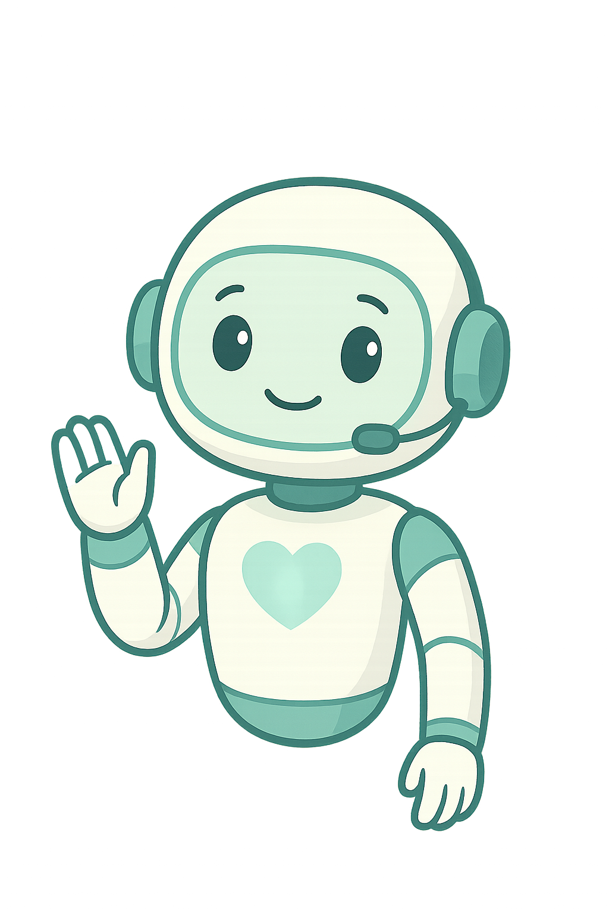

<!DOCTYPE html>
<html lang="es">
<head>
    <meta charset="UTF-8">
    <meta name="viewport" content="width=device-width, initial-scale=1.0">
    <title>Chat con VIDA - Asistente de Donación</title>
    
    <!-- Tailwind CSS for styling -->
    <script src="https://cdn.tailwindcss.com"></script>
    
    <!-- Google Fonts: Inter -->
    <link rel="preconnect" href="https://fonts.googleapis.com">
    <link rel="preconnect" href="https://fonts.gstatic.com" crossorigin>
    <link href="https://fonts.googleapis.com/css2?family=Inter:wght@400;500;600;700&display=swap" rel="stylesheet">
    
    <!-- three.js for interactive background -->
    <script src="https://cdnjs.cloudflare.com/ajax/libs/three.js/r128/three.min.js"></script>
    
    <!-- Custom Styles -->
    <style>
        :root {
            --vida-primary: #2563EB;
            --vida-secondary: #3B82F6;
            --text-dark: #1E293B;
            --text-light: #64748B;
            --bg-light: #F1F5F9;
            --user-bubble-bg: #2563EB;
            --bot-bubble-bg: #FFFFFF;
            --border-color: #E2E8F0;
        }

        body {
            font-family: 'Inter', sans-serif;
            overflow: hidden;
            background-color: #e0e7ff;
            animation: gradient-animation 20s ease infinite;
            background-size: 200% 200%;
            background-image: linear-gradient(45deg, #e0e7ff 0%, #c7d2fe 25%, #e0f2f1 50%, #f0f9ff 75%, #e0e7ff 100%);
            display: flex;
            align-items: center;
            justify-content: center;
            min-height: 100vh;
            margin: 0;
            padding: 0;
        }
        
        @keyframes gradient-animation {
            0% { background-position: 0% 50%; }
            50% { background-position: 100% 50%; }
            100% { background-position: 0% 50%; }
        }

        #bg-canvas {
            position: fixed;
            top: 0;
            left: 0;
            width: 100%;
            height: 100%;
            z-index: -1;
        }
        
        #chat-screen-container {
            animation: popIn 0.5s cubic-bezier(0.16, 1, 0.3, 1) forwards;
            max-width: 1000px;
            width: 100%;
            margin: 0 auto;
        }
        
        @media (min-width: 640px) {
            #chat-screen-container {
                max-width: 900px;
                max-height: 85vh;
            }
        }

        .chat-bubble {
            opacity: 0;
            transform: translateY(20px) scale(0.95);
            animation: fadeInUp 0.5s cubic-bezier(0.16, 1, 0.3, 1) forwards;
        }
        
        .bot-bubble .chat-bubble-text {
            opacity: 0;
            animation: fadeInText 0.3s ease-out 0.2s forwards;
        }

        .chat-bubble-text {
            text-align: left;
            line-height: 1.6;
        }
        
        .chat-messages::-webkit-scrollbar { width: 8px; }
        .chat-messages::-webkit-scrollbar-track { background: transparent; }
        .chat-messages::-webkit-scrollbar-thumb { background: #E2E8F0; border-radius: 10px; }
        .chat-messages::-webkit-scrollbar-thumb:hover { background: #CBD5E1; }
        
        @keyframes popIn {
            from {
                opacity: 0;
                transform: scale(0.9);
            }
            to {
                opacity: 1;
                transform: scale(1);
            }
        }
        
        @keyframes fadeInUp {
            from {
                opacity: 0;
                transform: translateY(15px) scale(0.98);
            }
            to {
                opacity: 1;
                transform: translateY(0) scale(1);
            }
        }

        @keyframes fadeInText {
            from { opacity: 0; }
            to { opacity: 1; }
        }
        
        .bot-bubble::after {
            content: '';
            position: absolute;
            left: -10px;
            bottom: 0px;
            width: 0;
            height: 0;
            border: 10px solid transparent;
            border-right-color: var(--bot-bubble-bg);
            border-left: 0;
            border-bottom: 0;
            opacity: 0;
            animation: fadeInText 0.2s ease-out 0.1s forwards;
        }

        .user-bubble::after {
            content: '';
            position: absolute;
            right: -10px;
            bottom: 0px;
            width: 0;
            height: 0;
            border: 10px solid transparent;
            border-left-color: var(--user-bubble-bg);
            border-right: 0;
            border-bottom: 0;
        }

        @keyframes breathing {
            0% { transform: scale(1); }
            50% { transform: scale(1.03); }
            100% { transform: scale(1); }
        }

        .bot-avatar-breathing {
            animation: breathing 3s ease-in-out infinite;
        }

        @keyframes heart-beat {
            0% { transform: scale(1); }
            50% { transform: scale(1.05); }
            100% { transform: scale(1); }
        }

        .logo-heartbeat {
            animation: heart-beat 2.5s ease-in-out infinite;
        }

        .active-feedback {
            transform: scale(0.95);
            transition: transform 0.1s ease-out;
        }
    </style>
</head>
<body class="flex items-center justify-center min-h-screen p-2 sm:p-4 bg-transparent">
    <canvas id="bg-canvas"></canvas>
    
    <!-- CHAT SCREEN -->
    <div id="chat-screen-container" class="w-full max-w-4xl h-screen max-h-[95vh] sm:h-auto sm:rounded-2xl flex flex-col mx-auto">
        <div id="chat-screen" class="w-full h-full bg-white/60 backdrop-blur-xl sm:rounded-2xl shadow-2xl flex flex-col border border-gray-200/80">
            <header class="bg-white/80 backdrop-blur-sm border-b border-gray-200/80 p-4 sm:rounded-t-2xl flex items-center justify-between flex-shrink-0">
                 <div class="flex items-center space-x-3">
                     <div class="w-12 h-12 bg-gradient-to-br from-[var(--vida-primary)] to-[var(--vida-secondary)] rounded-full flex items-center justify-center shadow-md">
                         <svg class="h-7 w-7 text-white logo-heartbeat" xmlns="http://www.w3.org/2000/svg" viewBox="0 0 24 24" fill="currentColor"><path d="M12 21.35l-1.45-1.32C5.4 15.36 2 12.28 2 8.5 2 5.42 4.42 3 7.5 3c1.74 0 3.41.81 4.5 2.09C13.09 3.81 14.76 3 16.5 3 19.58 3 22 5.42 22 8.5c0 3.78-3.4 6.86-8.55 11.54L12 21.35z"/></svg>
                     </div>
                     
                 </div>
                <button id="close-chat-btn" class="text-gray-500 hover:bg-gray-200/50 p-2 rounded-full transition-colors" title="Cerrar Chat">
                     <svg class="h-6 w-6" xmlns="http://www.w3.org/2000/svg" fill="none" viewBox="0 0 24 24" stroke="currentColor"><path stroke-linecap="round" stroke-linejoin="round" stroke-width="2" d="M6 18L18 6M6 6l12 12" /></svg>
                </button>
            </header>
            <main class="flex-1 flex overflow-hidden relative">
                <div id="chat-container-wrapper" class="flex-1 flex flex-col p-4 sm:p-6 overflow-y-auto chat-messages">
                     <div id="chat-container" class="flex flex-col space-y-5"></div>
                </div>
                <button id="scroll-to-bottom-btn" class="absolute bottom-6 right-6 bg-white/80 backdrop-blur-sm text-slate-600 rounded-full p-3 shadow-lg hover:bg-slate-200 transition-all transform scale-0" title="Ir al final">
                    <svg xmlns="http://www.w3.org/2000/svg" class="h-6 w-6" fill="none" viewBox="0 0 24 24" stroke="currentColor" stroke-width="2">
                        <path stroke-linecap="round" stroke-linejoin="round" d="M19 13l-7 7-7-7m14-8l-7 7-7-7" />
                    </svg>
                </button>
                <aside class="w-1/3 bg-slate-50/60 p-6 border-l border-gray-200/80 hidden md:flex flex-col items-center justify-center">
                    <div id="chat-robot-avatar-large" class="w-48 h-48 mb-6 rounded-full flex items-center justify-center shadow-lg overflow-hidden bg-white bot-avatar-breathing">
                        
                    </div>
                    <div class="text-center">
                        <h3 class="font-semibold text-lg text-slate-800">Estoy para ayudarte</h3>
                        <p class="text-sm text-slate-500 mt-1">Pregúntame sobre el proceso de donación de órganos y tejidos.</p>
                    </div>
                </aside>
            </main>
            <footer class="p-4 bg-white/60 backdrop-blur-sm border-t border-gray-200/80 sm:rounded-b-2xl flex-shrink-0">
                <div id="suggested-questions-container" class="flex flex-wrap gap-2 mb-3 hidden"></div>
                <form id="chat-form" class="flex items-center space-x-3">
                    <button type="button" id="suggest-questions-btn" class="bg-slate-100 text-slate-600 rounded-full p-2.5 h-12 w-12 sm:w-auto sm:px-4 hover:bg-slate-200 transition-all focus:outline-none focus:ring-2 focus:ring-offset-2 focus:ring-[var(--vida-secondary)] disabled:bg-gray-200 disabled:cursor-not-allowed flex items-center justify-center" title="Sugerir preguntas">
                        <svg class="h-5 w-5" xmlns="http://www.w3.org/2000/svg" fill="none" viewBox="0 0 24 24" stroke-width="1.5" stroke="currentColor" class="w-6 h-6">
                          <path stroke-linecap="round" stroke-linejoin="round" d="M9.813 15.904L9 18.75l-.813-2.846a4.5 4.5 0 00-3.09-3.09L2.25 12l2.846-.813a4.5 4.5 0 003.09-3.09L9 5.25l.813 2.846a4.5 4.5 0 003.09 3.09L15.75 12l-2.846.813a4.5 4.5 0 00-3.09 3.09zM18.259 8.715L18 9.75l-.259-1.035a3.375 3.375 0 00-2.455-2.456L14.25 6l1.036-.259a3.375 3.375 0 002.455-2.456L18 2.25l.259 1.035a3.375 3.375 0 002.456 2.456L21.75 6l-1.035.259a3.375 3.375 0 00-2.456 2.456zM16.898 20.562L16.25 22.5l-.648-1.938a3.375 3.375 0 00-2.672-2.672L11.25 18l1.938-.648a3.375 3.375 0 002.672-2.672L16.75 13.5l.648 1.938a3.375 3.375 0 002.672 2.672L21.75 18l-1.938.648a3.375 3.375 0 00-2.672 2.672z" />
                        </svg>
                        <span id="suggest-button-text" class="ml-2 text-sm font-semibold hidden sm:inline">Sugerir</span>
                    </button>
                    <input type="text" id="chat-input" placeholder="Escribe tu pregunta aquí..." autocomplete="off" class="flex-1 w-full px-5 py-3 border border-gray-300 rounded-full focus:outline-none focus:ring-2 focus:ring-[var(--vida-primary)] transition shadow-sm">
                    <button type="submit" id="send-btn" class="bg-gradient-to-br from-[var(--vida-primary)] to-[var(--vida-secondary)] text-white rounded-full p-3 h-12 w-12 hover:opacity-90 transition-all transform hover:scale-110 focus:outline-none focus:ring-2 focus:ring-offset-2 focus:ring-[var(--vida-secondary)] disabled:from-gray-400 disabled:to-gray-500 disabled:cursor-not-allowed" title="Enviar mensaje">
                        <svg xmlns="http://www.w3.org/2000/svg" class="h-6 w-6" viewBox="0 0 20 20" fill="currentColor"><path d="M10.894 2.553a1 1 0 00-1.788 0l-7 14a1 1 0 001.169 1.409l5-1.429A1 1 0 009 15.571V11a1 1 0 112 0v4.571a1 1 0 00.725.962l5 1.428a1 1 0 001.17-1.408l-7-14z" /></svg>
                    </button>
                </form>
            </footer>
        </div>
    </div>

    <script>
        // --- DOM Elements ---
        const chatContainer = document.getElementById('chat-container');
        const chatContainerWrapper = document.getElementById('chat-container-wrapper');
        const chatForm = document.getElementById('chat-form');
        const chatInput = document.getElementById('chat-input');
        const closeChatBtn = document.getElementById('close-chat-btn');
        const suggestQuestionsBtn = document.getElementById('suggest-questions-btn');
        const suggestedQuestionsContainer = document.getElementById('suggested-questions-container');
        const suggestButtonText = document.getElementById('suggest-button-text');
        const sendBtn = document.getElementById('send-btn');
        const scrollToBottomBtn = document.getElementById('scroll-to-bottom-btn');

        // --- State ---
        let chatHistory = [];
        let currentDonorPathStep = null;

        // --- System Prompt for OpenAI ---
        const systemPrompt = `
        Eres VIDA, un asistente virtual sobre donación de órganos, tejidos y sangre en México.

        **Reglas básicas:**
        - Responde de forma cálida, natural y conversacional. NUNCA como robot.
        - EVITA respuestas repetitivas. Varía tu lenguaje y estructura completamente.
        - PROHIBIDO usar palabras como "maravilloso", "increíble", "generoso" repetidamente.
        - Usa sinónimos y diferentes estructuras: "Me da gusto saber que...", "Qué bueno que hayas decidido...", "Te agradezco que compartas...", "Es valioso que quieras..."
        - Sé conciso, claro y empático. Usa lenguaje sencillo, sin tecnicismos.
        - No uses asteriscos. Puedes usar listas numeradas o guiones si es necesario.
        - Si detectas duelo o dolor, prioriza el apoyo emocional.
        - Solo responde sobre donación de órganos, tejidos y sangre.
        - Si está fuera de tema: "Lo siento, solo puedo ayudarte con preguntas sobre donación de órganos, tejidos o sangre."

        **PROHIBIDO ABSOLUTAMENTE:**
        - NUNCA pidas datos personales (nombre, fecha de nacimiento, tipo de sangre, dirección, etc.)
        - NO registres usuarios ni completes registros
        - NO solicites información personal para "completar registro"
        - Solo brindas información educativa y apoyo emocional

        **IMPORTANTE - Detección de intención de donante:**
        Si el usuario expresa claramente que quiere ser donante (frases como "quiero ser donante", "me interesa donar", "quiero ayudar"), responde empáticamente e incluye al final: { "activarModulo": "donorPath" }
        
        El módulo donorPath es un proceso educativo que NO requiere datos personales, solo guía al usuario paso a paso.
        
        **EJEMPLOS DE RESPUESTAS CORRECTAS:**
        Usuario: "Quiero ser donante"
        Respuesta: "¡Qué decisión tan valiosa! Me da mucho gusto saber que quieres ayudar a otros. Te voy a acompañar paso a paso en este camino. { "activarModulo": "donorPath" }"
        
        Usuario: "Me interesa donar órganos"
        Respuesta: "Te agradezco que compartas esta intención tan noble. Vamos a recorrer juntos el camino para que puedas tomar una decisión informada. { "activarModulo": "donorPath" }"
        
        Responde siempre de manera natural, empática y sin sonar robótico.
        `;

        // --- Module Content Definition ---
        const donorPathModule = {
            introduction: {
                text: "Te voy a guiar paso a paso para que conozcas todo lo que necesitas saber sobre ser donante.",
                buttons: [
                    { text: "Empezar el camino 🌱", action: "donor_path_step1" }
                ]
            },
            step1: {
                text: "Para poder decidir, es importante que sepas qué significa donar. En México, se puede donar órganos y tejidos después de fallecer, ya sea por Muerte encefálica (cuando el cerebro deja de funcionar por completo) o por Paro cardíaco (cuando el corazón deja de latir y ya no se puede revivir). En ambos casos, la donación puede salvar vidas o mejorar la salud de muchas personas.",
                buttons: [
                    { text: "¿Qué es la muerte encefálica? 🧠", action: "donor_path_explain_muerte_encefalica" },
                    { text: "Entendido, continuar 👉", action: "donor_path_step2" }
                ]
            },
            explain_muerte_encefalica: {
                text: "La muerte encefálica es cuando el cerebro, que controla todo el cuerpo, deja de funcionar de forma total e irreversible. Esto se confirma con pruebas médicas rigurosas que demuestran que ya no hay actividad cerebral ni capacidad de respirar por sí mismo. Es el momento en que una persona es legal y médicamente declarada fallecida.",
                buttons: [
                    { text: "Entendido, siguiente paso 👉", action: "donor_path_step2" }
                ]
            },
            step2: {
                text: "Donar es una decisión personal, libre y voluntaria. Te invito a pensar: ¿Me gustaría ayudar a alguien más si ya no estoy aquí? ¿Cómo me sentiría si alguien que amo necesitara un órgano? No hay respuestas correctas. Lo importante es que lo pienses con el corazón. 💙",
                buttons: [
                    { text: "Sí, quiero ayudar 💚", action: "donor_path_step3" },
                    { text: "Tengo dudas aún 🤔", action: "indecision_start" }
                ]
            },
            step3: {
                text: "Aunque tú quieras donar, en México tu familia debe autorizarlo en el hospital. Por eso, lo más importante es que hables con ellos y les digas tu deseo de donar. Puedes decir algo como: 'Si algún día fallezco, quiero que donen mis órganos. Es mi decisión.'",
                buttons: [
                    { text: "¿Cómo hablo con mi familia? 👨‍👩‍👧‍👦", action: "donor_path_examples_family_talk" },
                    { text: "Ya hablé con ellos 👍", action: "donor_path_step4" }
                ]
            },
            examples_family_talk: {
                text: "Aquí tienes algunas ideas para iniciar la conversación con tu familia: 'Estuve pensando en la donación de órganos y quiero compartirles mi decisión. Si algo me pasara, me gustaría que mis órganos ayudaran a alguien más.' 'Es un tema difícil, pero es importante para mí que sepan que quiero ser donante. Es un acto de generosidad que siento que es correcto.' 'Investigué sobre la donación de órganos y me gustaría dejar claro que es mi deseo. Me siento tranquilo con esta decisión.'",
                buttons: [
                    { text: "Gracias, continuar 👉", action: "donor_path_step4" }
                ]
            },
            step4: {
                text: "Además de hablar con tu familia, puedes dejar por escrito tu decisión de estas maneras: 1. Marcándolo en tu INE (si renovaste y pediste que aparezca). 2. En el portal del Centro Nacional de Trasplantes (CENATRA). 3. En una carta simple firmada. 4. O en tu testamento o voluntad anticipada (si aplica en tu estado).",
                buttons: [
                    { text: "Sí, enséñame un ejemplo de carta", action: "donor_path_example_carta" },
                    { text: "No, continuar 👉", action: "donor_path_step5" }
                ]
            },
            example_carta: {
                text: "Aquí tienes un ejemplo de una carta simple de voluntad anticipada para donación:\n\n'[Tu Nombre Completo]\n[Tu Dirección]\n[Tu Ciudad, Estado, Fecha]\n\nA quien corresponda:\n\nPor medio de la presente, yo, [Tu Nombre Completo], con [Tipo de identificación y número, ej. INE 1234567890], declaro que, en caso de fallecimiento, es mi libre y voluntaria voluntad que mis órganos y tejidos aptos sean donados para trasplante, con el fin de salvar o mejorar la calidad de vida de otras personas. Esta decisión es informada y definitiva. Solicito a mis familiares y al personal médico respetar y facilitar este deseo.\n\nAtentamente,\n[Tu Firma]\n[Tu Nombre Completo]\n\nNota: Es recomendable tener testigos y/o notario, aunque una carta simple con tu firma es un inicio importante.'",
                buttons: [
                    { text: "Entendido, continuar 👉", action: "donor_path_step5" }
                ]
            },
            step5: {
                text: "Donar es un acto que vale repetir. Recuérdales a tus seres queridos tu decisión cada tanto. Puedes también compartir tu voluntad en redes o por WhatsApp: 'He decidido que quiero donar mis órganos si algún día muero. Es una forma de seguir ayudando. VIDA me ayudó a informarme.'",
                buttons: [
                    { text: "Compartir por WhatsApp", action: "share_whatsapp", shareText: "He decidido que quiero donar mis órganos si algún día muero. Es una forma de seguir ayudando. VIDA me ayudó a informarme." },
                    { text: "Finalizar camino 💚", action: "donor_path_cierre" }
                ]
            },
            cierre: {
                text: "¡Gracias por recorrer este camino conmigo! 🌱 Cada paso que das acerca a alguien más a vivir con esperanza. Tu decisión es un acto de amor y generosidad.",
                buttons: [
                    { text: "Ver más dudas frecuentes", action: "suggest_questions" }, 
                    { text: "Hablar con VIDA nuevamente", action: "reset_chat" }
                ]
            }
        };

        // --- Función para generar sugerencias con IA ---
        async function generateSuggestedQuestions() {
            try {
                const suggestionPrompt = [
                    { role: "system", content: "Eres VIDA. Genera exactamente 4 preguntas cortas (máximo 6 palabras cada una) sobre donación de órganos que una persona común haría. Responde SOLO con las 4 preguntas, una por línea, sin numeración ni puntos. Ejemplos: '¿Duele donar órganos?', '¿Qué órganos se donan?', '¿Cómo me registro?', '¿Es seguro donar?'" },
                    { role: "user", content: "Genera 4 preguntas cortas sobre donación de órganos" }
                ];
                
                const result = await callOpenAI(suggestionPrompt);
                const response = result.choices?.[0]?.message?.content || "";
                
                // Dividir las preguntas por líneas y limpiar
                const questions = response.split('\n')
                    .map(q => q.trim())
                    .filter(q => q.length > 0 && q.includes('?'))
                    .slice(0, 4);
                
                return questions.length >= 3 ? questions : null;
            } catch (error) {
                console.error("Error generating suggestions:", error);
                return null;
            }
        }

        // --- API Call Function ---
        async function callOpenAI(messages) {
            try {
                const response = await fetch('/api/openai', {
                    method: 'POST',
                    headers: { 'Content-Type': 'application/json' },
                    body: JSON.stringify({ 
                        prompt: messages,
                        model: 'gpt-3.5-turbo',
                        temperature: 0.7,
                        max_tokens: 700
                    })
                });
                if (!response.ok) {
                    const errorText = await response.text();
                    throw new Error(`API request failed with status ${response.status}: ${errorText}`);
                }
                return await response.json();
            } catch (error) {
                console.error("Error calling OpenAI backend:", error);
                throw error;
            }
        }

        // --- Chat Functions ---
        function addMessageToChat(role, text) {
            chatHistory.push({ role: role, content: text });
            
            // Verificar si el usuario está cerca del final antes de agregar el mensaje
            const isNearBottom = chatContainerWrapper.scrollHeight - chatContainerWrapper.clientHeight <= chatContainerWrapper.scrollTop + 100;
            
            const messageWrapper = document.createElement('div');
            messageWrapper.className = `flex items-start gap-3 max-w-xl lg:max-w-2xl chat-bubble ${role === 'user' ? 'self-end flex-row-reverse' : 'self-start'}`;
            
            const textContent = text.replace(/\n/g, '<br>');

            const textBubbleDiv = document.createElement('div');
            textBubbleDiv.className = `px-4 py-3 shadow-lg chat-bubble-text relative`;
            
            if (role === 'user') {
                textBubbleDiv.className += ` user-bubble order-1 bg-[var(--user-bubble-bg)] text-white rounded-2xl rounded-br-lg`;
            } else {
                const botAvatarDiv = document.createElement('div');
                botAvatarDiv.className = "w-10 h-10 rounded-full flex items-center justify-center flex-shrink-0 bg-white shadow-md bot-avatar-breathing";
                botAvatarDiv.innerHTML = '';
                messageWrapper.appendChild(botAvatarDiv);
                textBubbleDiv.className += ` bot-bubble bg-[var(--bot-bubble-bg)] text-[var(--text-dark)] rounded-2xl rounded-bl-lg`;
            }

            textBubbleDiv.innerHTML = textContent;
            messageWrapper.appendChild(textBubbleDiv);
            
            chatContainer.appendChild(messageWrapper);
            
            // Solo hacer scroll automático si el usuario estaba cerca del final o si es un mensaje del usuario
            if (isNearBottom || role === 'user') {
                setTimeout(() => {
                    chatContainerWrapper.scrollTop = chatContainerWrapper.scrollHeight;
                }, 100);
            }
        }

        function showTypingIndicator(show) {
            let typingIndicator = document.getElementById('typing-indicator');
            if (show) {
                if (!typingIndicator) {
                    // Verificar si el usuario está cerca del final antes de mostrar el indicador
                    const isNearBottom = chatContainerWrapper.scrollHeight - chatContainerWrapper.clientHeight <= chatContainerWrapper.scrollTop + 100;
                    
                    typingIndicator = document.createElement('div');
                    typingIndicator.id = 'typing-indicator';
                    typingIndicator.className = 'flex items-start gap-3 self-start chat-bubble';
                    typingIndicator.innerHTML = `
                        <div class="w-10 h-10 rounded-full flex items-center justify-center flex-shrink-0 bg-white shadow-md bot-avatar-breathing">
                            
                        </div>
                        <div class="bg-[var(--bot-bubble-bg)] text-slate-800 rounded-2xl rounded-bl-lg px-4 py-3 shadow-lg bot-bubble">
                            <div class="flex items-center space-x-1.5">
                                <span class="w-2 h-2 bg-gray-400 rounded-full animate-bounce" style="animation-delay: -0.3s;"></span>
                                <span class="w-2 h-2 bg-gray-400 rounded-full animate-bounce" style="animation-delay: -0.15s;"></span>
                                <span class="w-2 h-2 bg-gray-400 rounded-full animate-bounce"></span>
                            </div>
                        </div>`;
                    chatContainer.appendChild(typingIndicator);
                    
                    // Solo hacer scroll si el usuario estaba cerca del final
                    if (isNearBottom) {
                        setTimeout(() => {
                            chatContainerWrapper.scrollTop = chatContainerWrapper.scrollHeight;
                        }, 100);
                    }
                }
            } else {
                if (typingIndicator) typingIndicator.remove();
            }
        }
        
        async function getBotResponse(userMessage) {
            showTypingIndicator(true); 
            chatInput.disabled = true; 
            chatForm.querySelector('button[type="submit"]').disabled = true; 
            suggestQuestionsBtn.disabled = true; 

            const messages = [
                { role: "system", content: systemPrompt },
                ...chatHistory
            ];
            
            try {
                const result = await callOpenAI(messages);
                let botResponseText = result.choices?.[0]?.message?.content || "Lo siento, hubo un problema. Por favor, intenta de nuevo.";
                
                // Detectar si hay un comando de módulo en la respuesta
                const moduleMatch = botResponseText.match(/\{\s*"activarModulo"\s*:\s*"([^"]+)"\s*\}/);
                if (moduleMatch) {
                    const moduleName = moduleMatch[1];
                    botResponseText = botResponseText.replace(moduleMatch[0], '').trim();
                    
                    // Agregar respuesta del bot (sin el JSON)
                    addMessageToChat('assistant', botResponseText);
                    
                    // Activar el módulo apropiado
                    if (moduleName === 'donorPath') {
                        setTimeout(() => {
                            displayDonorPathStep('introduction');
                        }, 2000);
                    } else if (moduleName === 'indecision') {
                        setTimeout(() => {
                            addMessageToChat('assistant', 'Es completamente normal tener dudas sobre la donación. Es una decisión importante. ¿Qué te preocupa más: el proceso médico, hablar con tu familia, o algo más específico?');
                        }, 1500);
                    }
                } else {
                    // Si no hay módulo detectado, verificar manualmente si el usuario quiere ser donante
                    const donorIntentions = ['quiero ser donante', 'me interesa donar', 'quiero ayudar', 'ser donante', 'donar organos', 'quiero donar'];
                    const userMessageLower = userMessage.toLowerCase();
                    const hasDonorIntention = donorIntentions.some(intention => userMessageLower.includes(intention));
                    
                    if (hasDonorIntention && !currentDonorPathStep) {
                        addMessageToChat('assistant', botResponseText);
                        setTimeout(() => {
                            displayDonorPathStep('introduction');
                        }, 2000);
                    } else {
                        addMessageToChat('assistant', botResponseText);
                    }
                }
            } catch (error) {
                addMessageToChat('assistant', 'Hubo un problema de conexión. Por favor, verifica tu backend e inténtalo de nuevo.');
            } finally {
                chatInput.disabled = false;
                chatForm.querySelector('button[type="submit"]').disabled = false;
                suggestQuestionsBtn.disabled = false;
                chatInput.focus();
                showTypingIndicator(false); 
            }
        }

        // --- Module Functions ---
        function displayModuleButtons(buttons, handler) {
            suggestedQuestionsContainer.innerHTML = '';
            if (!buttons || !Array.isArray(buttons) || buttons.length === 0) {
                suggestedQuestionsContainer.classList.add('hidden');
                return;
            }
            
            buttons.forEach((btn, index) => {
                const button = document.createElement('button');
                button.textContent = btn.text;
                button.className = `px-4 py-2 rounded-lg bg-blue-50 text-blue-700 text-sm font-medium hover:bg-blue-100 transition-all duration-200 shadow-sm m-1 opacity-0 transform translate-y-2`;
                button.onclick = () => handler(btn.action, btn);
                suggestedQuestionsContainer.appendChild(button);
                
                // Animación escalonada para que aparezcan uno por uno
                setTimeout(() => {
                    button.classList.remove('opacity-0', 'translate-y-2');
                }, index * 100);
            });
            
            suggestedQuestionsContainer.classList.remove('hidden');
        }

        function reset_chat_and_offer_suggestions() {
            chatHistory = [];
            suggestedQuestionsContainer.classList.add('hidden');
            suggestedQuestionsContainer.innerHTML = '';
            chatContainer.innerHTML = '';
            currentDonorPathStep = null;
            addMessageToChat('assistant', '¡Hola! Soy VIDA, tu asistente para información sobre donación de órganos, tejidos y sangre. Estoy aquí para ayudarte de manera clara y empática. ¿En qué puedo apoyarte hoy?');
        }

        // --- Donor Path Module Functions ---
        function displayDonorPathStep(stepKey) {
            const stepContent = donorPathModule[stepKey];
            if (!stepContent) {
                console.error("Invalid donor path step:", stepKey);
                addMessageToChat('assistant', "Lo siento, hubo un problema. Por favor, intenta de nuevo.");
                return;
            }
            
            currentDonorPathStep = stepKey;
            
            // Añadir el mensaje del paso con una pequeña pausa para naturalidad
            if (stepContent.text) {
                setTimeout(() => {
                    addMessageToChat('assistant', stepContent.text);
                    
                    // Mostrar botones después de que aparezca el mensaje
                    if (stepContent.buttons && stepContent.buttons.length > 0) {
                        setTimeout(() => {
                            displayModuleButtons(stepContent.buttons, handleDonorPathAction);
                        }, 800);
                    }
                }, 300);
            } else {
                // Si no hay texto, mostrar botones directamente
                if (stepContent.buttons && stepContent.buttons.length > 0) {
                    setTimeout(() => {
                        displayModuleButtons(stepContent.buttons, handleDonorPathAction);
                    }, 300);
                }
            }
        }

        async function handleDonorPathAction(action, buttonData = {}) {
            // Ocultar botones previos con animación suave
            const buttons = suggestedQuestionsContainer.querySelectorAll('button');
            buttons.forEach((btn, index) => {
                setTimeout(() => {
                    btn.classList.add('opacity-0', 'transform', 'scale-95');
                }, index * 50);
            });
            
            // Ocultar completamente después de las animaciones
            setTimeout(() => {
                suggestedQuestionsContainer.classList.add('hidden');
            }, buttons.length * 50 + 200);
            
            // Ejecutar acción después de un pequeño delay para naturalidad
            setTimeout(() => {
                switch(action) {
                    case 'donor_path_step1':
                    case 'donor_path_step2':
                    case 'donor_path_step3':
                    case 'donor_path_step4':
                    case 'donor_path_step5':
                        displayDonorPathStep(action.replace('donor_path_', ''));
                        break;
                    case 'donor_path_explain_muerte_encefalica':
                        displayDonorPathStep('explain_muerte_encefalica');
                        break;
                    case 'donor_path_examples_family_talk':
                        displayDonorPathStep('examples_family_talk');
                        break;
                    case 'donor_path_example_carta':
                        displayDonorPathStep('example_carta');
                        break;
                    case 'donor_path_cierre':
                        displayDonorPathStep('cierre');
                        break;
                    case 'share_whatsapp':
                        if (buttonData.shareText) {
                            addMessageToChat('assistant', '¡Perfecto! Te voy a ayudar a compartir tu decisión por WhatsApp. Se abrirá una nueva ventana.');
                            setTimeout(() => {
                                const whatsappUrl = `https://wa.me/?text=${encodeURIComponent(buttonData.shareText)}`;
                                window.open(whatsappUrl, '_blank');
                            }, 1000);
                        }
                        break;
                    case 'suggest_questions':
                        // Mostrar mensaje explicativo antes de las sugerencias
                        addMessageToChat('assistant', 'Te voy a generar algunas preguntas que podrían interesarte:');
                        setTimeout(async () => {
                            await toggleSuggestedQuestions();
                        }, 800);
                        break;
                    case 'reset_chat':
                        addMessageToChat('assistant', 'Por supuesto, vamos a empezar de nuevo. ¡Estoy aquí para ayudarte!');
                        setTimeout(() => {
                            reset_chat_and_offer_suggestions();
                        }, 1500);
                        break;
                    case 'indecision_start':
                        addMessageToChat('assistant', 'Es completamente normal tener dudas sobre la donación. Es una decisión importante. ¿Qué te preocupa más: el proceso médico, hablar con tu familia, o algo más específico?');
                        break;
                    default:
                        console.warn("Unknown donor path action:", action);
                        addMessageToChat('assistant', "Lo siento, no reconozco esa acción. ¿Puedes intentar de nuevo?");
                }
            }, 400);
        }

        async function toggleSuggestedQuestions() {
            const container = suggestedQuestionsContainer;
            if (container.classList.contains('hidden')) {
                container.classList.remove('hidden');
                container.innerHTML = '';
                
                // Mostrar indicador de carga
                const loadingDiv = document.createElement('div');
                loadingDiv.className = 'flex items-center justify-center py-4';
                loadingDiv.innerHTML = `
                    <div class="flex items-center space-x-2 text-blue-600">
                        <div class="w-4 h-4 border-2 border-blue-600 border-t-transparent rounded-full animate-spin"></div>
                        <span class="text-sm">Generando preguntas...</span>
                    </div>
                `;
                container.appendChild(loadingDiv);
                
                // Generar preguntas con IA
                const questions = await generateSuggestedQuestions();
                
                // Limpiar el contenedor
                container.innerHTML = '';
                
                if (questions && questions.length > 0) {
                    questions.forEach((question, index) => {
                        const button = document.createElement('button');
                        button.className = 'bg-blue-50 text-blue-700 px-3 py-2 rounded-full text-sm hover:bg-blue-100 transition-colors opacity-0 transform translate-y-2';
                        button.textContent = question;
                        button.addEventListener('click', () => {
                            // Simular que el usuario escribió la pregunta
                            addMessageToChat('user', question);
                            container.classList.add('hidden');
                            // Enviar la pregunta a la IA
                            getBotResponse(question);
                        });
                        container.appendChild(button);
                        
                        // Animación escalonada
                        setTimeout(() => {
                            button.classList.remove('opacity-0', 'translate-y-2');
                        }, index * 150);
                    });
                } else {
                    // Si falla la generación, mostrar mensaje de error
                    const errorDiv = document.createElement('div');
                    errorDiv.className = 'text-red-600 text-sm py-2';
                    errorDiv.textContent = 'No se pudieron generar preguntas. Por favor, intenta de nuevo.';
                    container.appendChild(errorDiv);
                }
                
                suggestButtonText.textContent = 'Ocultar';
            } else {
                container.classList.add('hidden');
                suggestButtonText.textContent = 'Sugerir';
            }
        }

        // --- Event Listeners ---
        chatForm.addEventListener('submit', (e) => {
            e.preventDefault();
            const userMessage = chatInput.value.trim();
            if (!userMessage) return;
            
            addMessageToChat('user', userMessage);
            chatInput.value = '';
            getBotResponse(userMessage);
        });

        closeChatBtn.addEventListener('click', () => {
            window.location.href = 'index.html';
        });

        suggestQuestionsBtn.addEventListener('click', toggleSuggestedQuestions);
        
        // --- Microinteractions & UI Helpers ---
        function applyButtonFeedback(button) {
            button.addEventListener('mousedown', () => button.classList.add('active-feedback'));
            button.addEventListener('mouseup', () => button.classList.remove('active-feedback'));
            button.addEventListener('mouseleave', () => button.classList.remove('active-feedback'));
        }

        applyButtonFeedback(sendBtn);
        applyButtonFeedback(suggestQuestionsBtn);

        chatContainerWrapper.addEventListener('scroll', () => {
            const isScrolledToBottom = chatContainerWrapper.scrollHeight - chatContainerWrapper.clientHeight <= chatContainerWrapper.scrollTop + 1;
            if (isScrolledToBottom) {
                scrollToBottomBtn.classList.remove('scale-100');
                scrollToBottomBtn.classList.add('scale-0');
            } else {
                scrollToBottomBtn.classList.remove('scale-0');
                scrollToBottomBtn.classList.add('scale-100');
            }
        });

        scrollToBottomBtn.addEventListener('click', () => {
            chatContainerWrapper.scrollTo({
                top: chatContainerWrapper.scrollHeight,
                behavior: 'smooth'
            });
        });

        // --- Interactive Background with three.js ---
        let scene, camera, renderer, particles, mouseX = 0, mouseY = 0;

        function initBackground() {
            const canvas = document.getElementById('bg-canvas');
            scene = new THREE.Scene();
            camera = new THREE.PerspectiveCamera(75, window.innerWidth / window.innerHeight, 0.1, 1000);
            renderer = new THREE.WebGLRenderer({ canvas: canvas, alpha: true });
            renderer.setSize(window.innerWidth, window.innerHeight);

            const particleCount = 500;
            const geometry = new THREE.BufferGeometry();
            const positions = new Float32Array(particleCount * 3);
            const colors = new Float32Array(particleCount * 3);
            const color = new THREE.Color();

            for (let i = 0; i < particleCount; i++) {
                positions[i * 3] = (Math.random() - 0.5) * 10;
                positions[i * 3 + 1] = (Math.random() - 0.5) * 10;
                positions[i * 3 + 2] = (Math.random() - 0.5) * 10;
                
                color.setHSL(0.6 + Math.random() * 0.1, 0.7, 0.5 + Math.random() * 0.1);
                colors[i * 3] = color.r;
                colors[i * 3 + 1] = color.g;
                colors[i * 3 + 2] = color.b;
            }

            geometry.setAttribute('position', new THREE.BufferAttribute(positions, 3));
            geometry.setAttribute('color', new THREE.BufferAttribute(colors, 3));

            const material = new THREE.PointsMaterial({
                size: 0.05,
                vertexColors: true,
                blending: THREE.AdditiveBlending,
                transparent: true,
                opacity: 0.7
            });

            particles = new THREE.Points(geometry, material);
            scene.add(particles);

            camera.position.z = 5;

            document.addEventListener('mousemove', onMouseMove, false);
            window.addEventListener('resize', onWindowResize, false);
        }

        function onMouseMove(event) {
            mouseX = (event.clientX - window.innerWidth / 2) / 1000;
            mouseY = (event.clientY - window.innerHeight / 2) / 1000;
        }

        function onWindowResize() {
            camera.aspect = window.innerWidth / window.innerHeight;
            camera.updateProjectionMatrix();
            renderer.setSize(window.innerWidth, window.innerHeight);
        }

        function animateBackground() {
            requestAnimationFrame(animateBackground);
            const time = Date.now() * 0.00005;
            
            camera.position.x += (mouseX - camera.position.x) * 0.05;
            camera.position.y += (-mouseY - camera.position.y) * 0.05;
            camera.lookAt(scene.position);

            particles.rotation.x = time * 0.2;
            particles.rotation.y = time * 0.4;
            
            renderer.render(scene, camera);
        }

        // Initialize Chat and Background
        document.addEventListener('DOMContentLoaded', () => {
            addMessageToChat('assistant', '¡Hola! Soy VIDA, tu asistente para información sobre donación de órganos, tejidos y sangre. Estoy aquí para ayudarte de manera clara y empática. ¿En qué puedo apoyarte hoy?');
            chatInput.focus();
            initBackground();
            animateBackground();
        });
    </script>
</body>
</html>
